마지막 버전 · 2026.09
조작 편집실
조회수 채널의 신입 편집자가 되어 허위조작정보 기법을 하나씩 해 보는 리듬 게임입니다. 스테이지 하나가 기법 하나이고, 1분 안에 끝납니다. 끝날 때마다 조작 전 원본이 되감기로 나오고 알아채는 법을 한 줄로 보여 줍니다.
- 연습 → 실전 → 원본 되감기 → 3단계 평가
- 탭 · 드래그만
- 음악 · 효과음 코드 합성
GAME · JAVASCRIPT · 7 VERSIONS
허위조작정보 리듬 편집실 · 일곱 번 다시 만든 게임
가짜뉴스가 어떻게 만들어지는지 플레이어가 직접 만들어 보는 웹게임입니다. 1학기 자바스크립트 중간과제로 시작해 기자 시뮬레이션, 퍼즐, 추리물을 거쳐 팩트체킹 공모전을 목표로 한 리듬 게임까지 구조를 일곱 번 바꿨습니다. 주제는 그대로 두고, 플레이어가 손으로 하는 일이 재밌어질 때까지 다시 만든 기록입니다.
휴대폰 세로 화면용으로 만든 마지막 버전입니다. 탭과 드래그만 씁니다. 소리를 켜고 박자에 맞춰 조작하세요. 오른쪽에서 게임과 같은 판정 규칙을 직접 시험해 볼 수 있습니다.
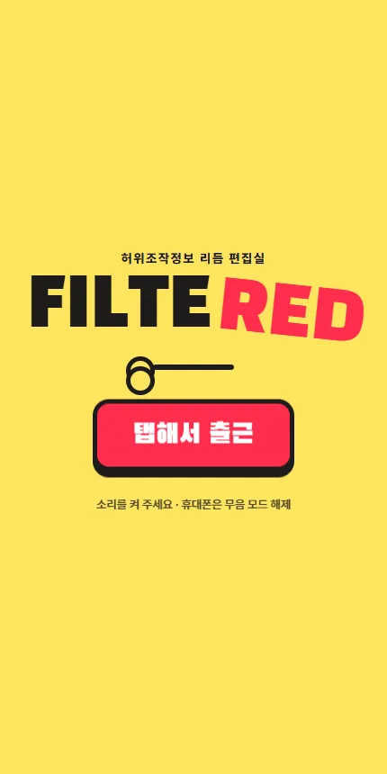
마지막 버전 · 2026.09
조회수 채널의 신입 편집자가 되어 허위조작정보 기법을 하나씩 해 보는 리듬 게임입니다. 스테이지 하나가 기법 하나이고, 1분 안에 끝납니다. 끝날 때마다 조작 전 원본이 되감기로 나오고 알아채는 법을 한 줄로 보여 줍니다.
출발점 · 2026.04 중간과제
영세 매체 기자가 되어 마감에 쫓기며 정직과 조작 사이를 고르는 시뮬레이션이었습니다. 가짜뉴스를 알아채는 쪽이 아니라 만드는 쪽에 서게 한 관점은 마지막 버전까지 그대로 이어졌습니다.
| # | 스테이지 | 기법 | 입력 | 박자 규칙 |
|---|---|---|---|---|
| 1 | 싹둑 | 맥락 자르기 | 탭 | “착, 착” 신호와 같은 간격으로 다음 박에 자른다 |
| 2 | 짜깁기 | 발언 짜깁기 | 탭 | 한 마디 듣고, 다음 마디 같은 박에 빨간 단어만 잡는다 |
| 3 | 자막 바꿔치기 | 허위 자막 | 위로 밀기 | 말이 끝난 다음 박에 가짜 자막을 밀어 올린다 |
| 4 | 그때 그 사진 | 과거 사진 재활용 | 문지르기 + 탭 | 쉐이커 소리 동안 날짜를 지우고 4박째 도장 |
| 5 | 그래프 늘리기 | 그래프 축 조작 | 끌었다 놓기 | “쿵 쿵 쿵” 동안 축을 올리고 넷에 놓는다 |
| 6 | 느리게 | 속도 조작 | 다이얼 | 영상 템포를 목표 메트로놈에 맞춘다 |
| 7 | 얼굴 붙이기 | 얼굴 합성 | 따라 탭 | 번쩍인 순서와 박자 그대로 따라 친다 |
| 8 | 좋아요 공장 | 봇 여론 조작 | 3줄 탭 | 떨어지는 하트가 선에 닿는 박에 친다 |
“하려는 말은 알겠는데, 거기까지 가는 게 루즈하고 재미없다”
중간과제 버전을 해 본 사람들의 평가였습니다. 메시지는 전달됐지만, 그 메시지에 닿기까지 읽어야 할 글과 신경 써야 할 시스템이 너무 많았습니다. 그래서 버전을 바꿀 때마다 기준을 “첫 화면에서 읽을 것을 줄이고 손으로 할 것을 늘린다”로 잡았습니다. 아래는 버전별 첫 플레이 화면의 글자 수입니다.
각 버전을 실행해 첫 플레이 화면에서 보이는 글자를 공백 빼고 센 값입니다(데스크톱 1440×900, v6 · v7은 휴대폰 430px 화면).
04 · BEHIND
무엇을 만들었고, 왜 멈췄고, 무엇을 다음 버전에 남겼는지에 대한 기록입니다. 버전마다 남긴 기획 문서와 작업 기록, 실행 화면을 바탕으로 정리했습니다.
버전을 누르면 그때 화면과 멈춘 이유가 나옵니다. 모든 버전이 지금도 실행됩니다.
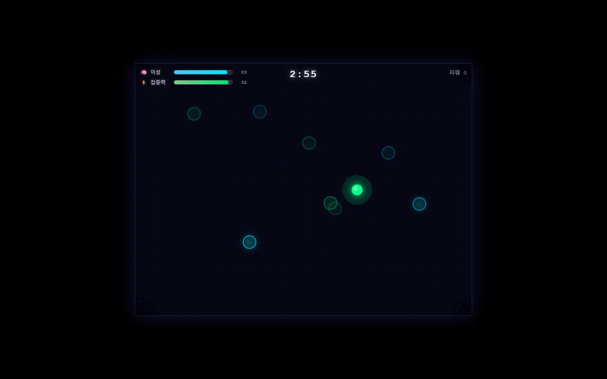
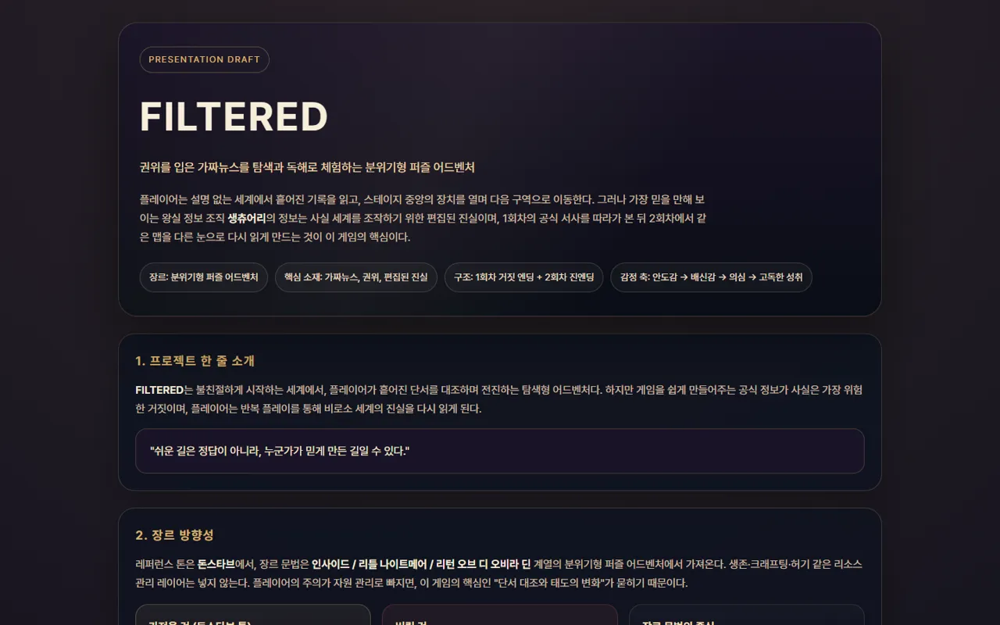
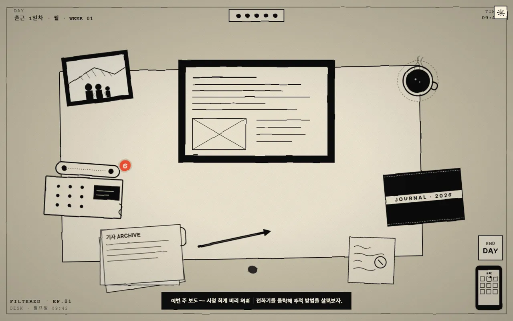
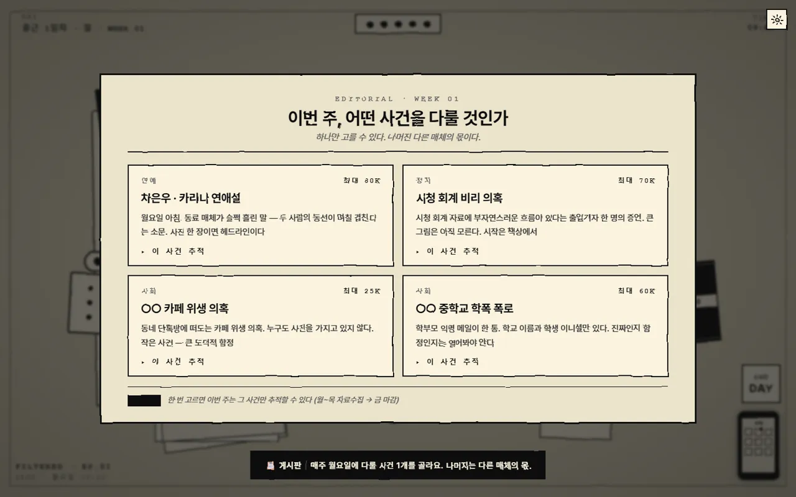
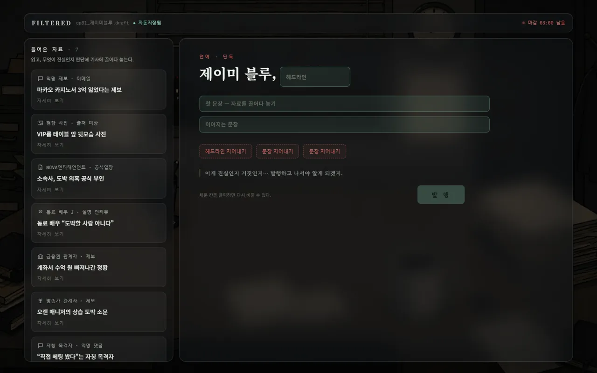
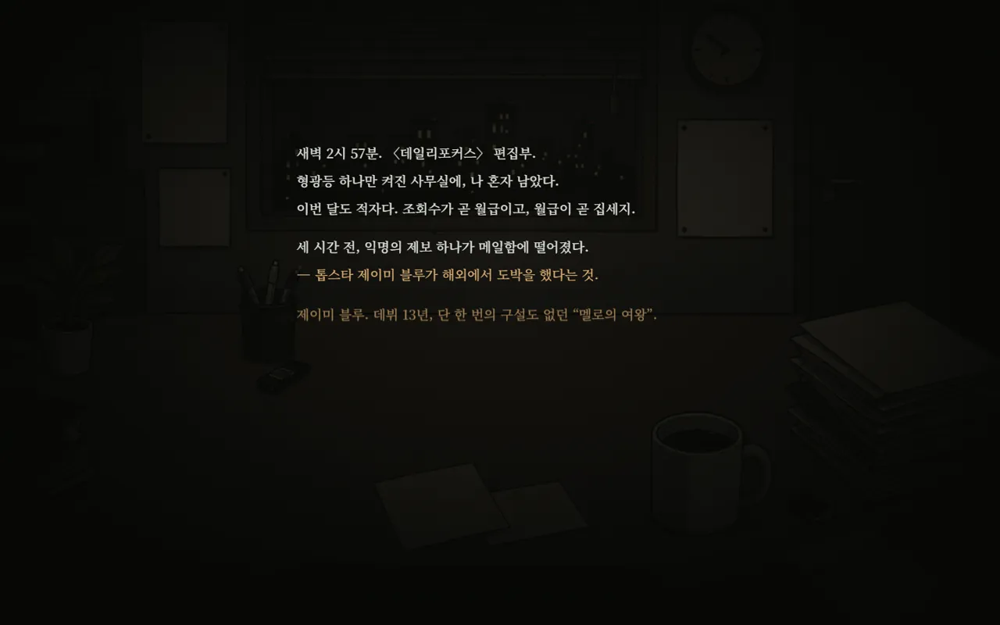
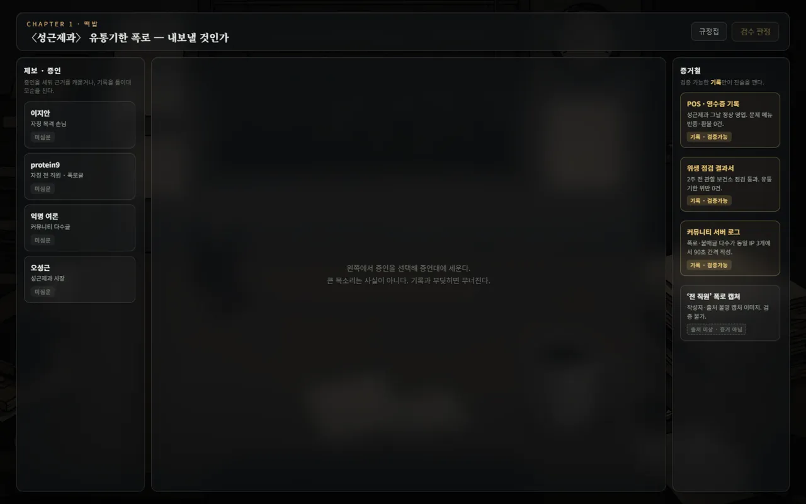
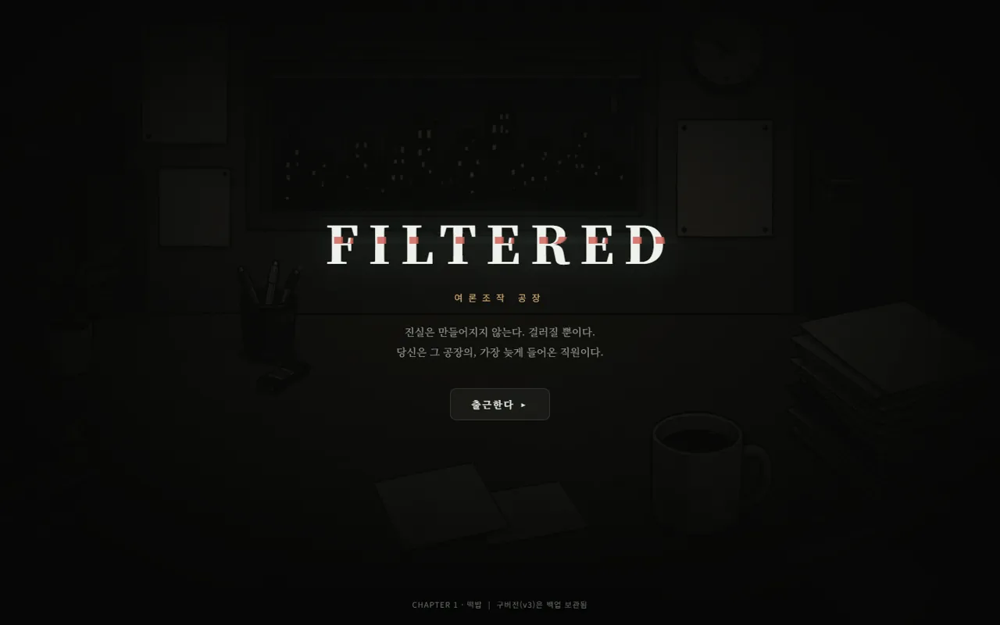
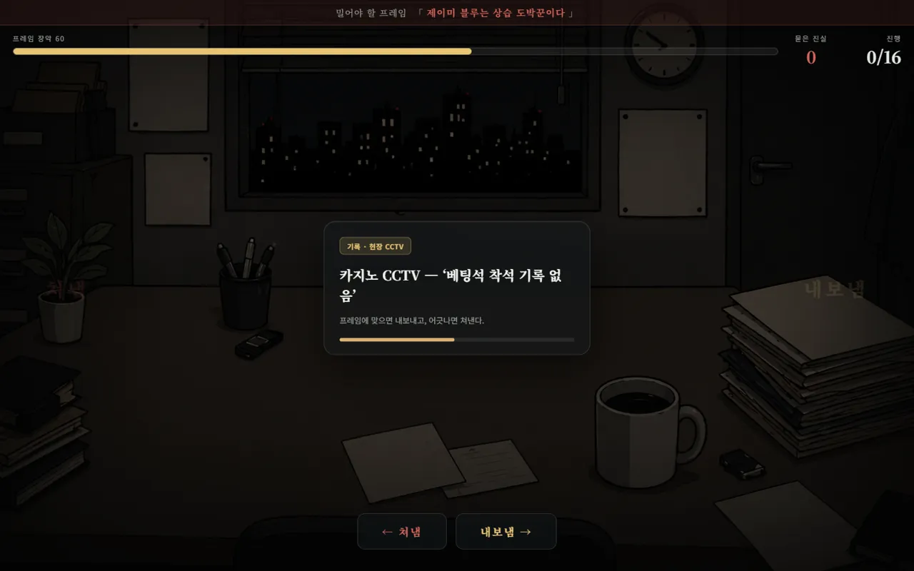
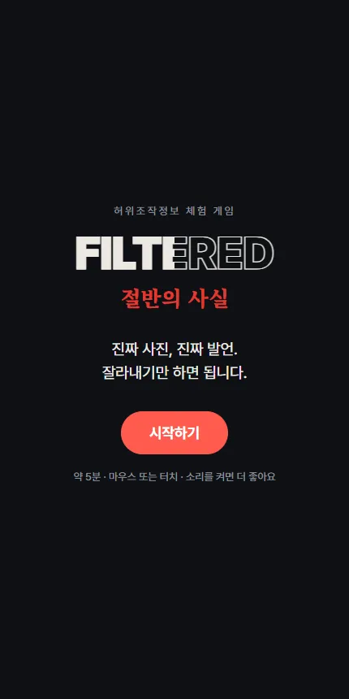
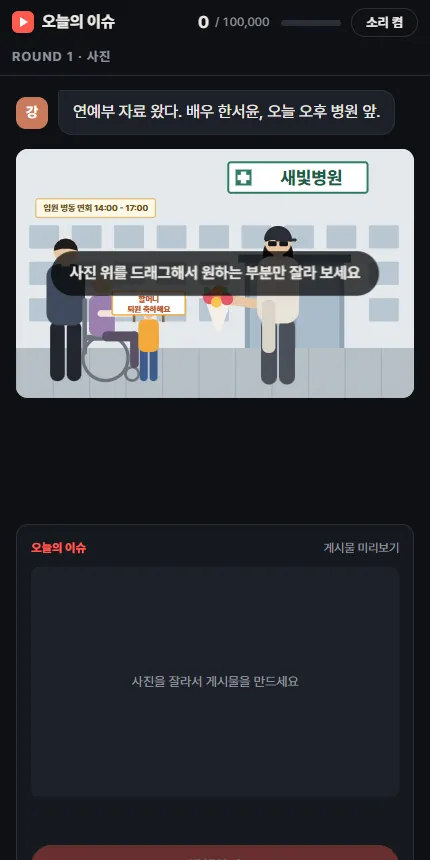
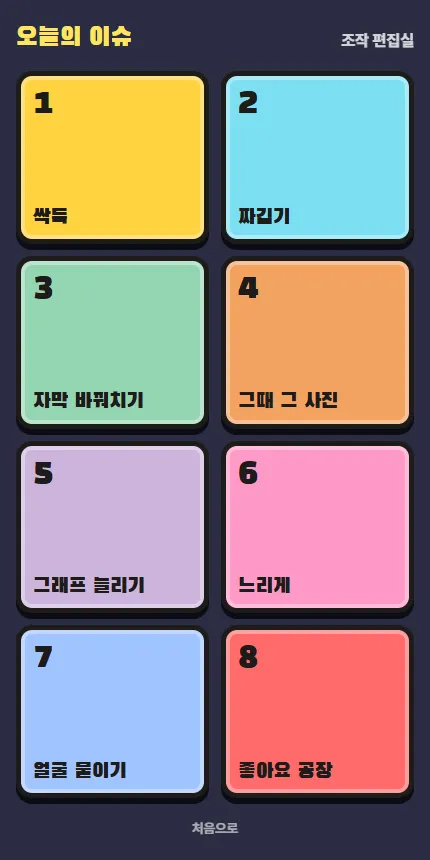
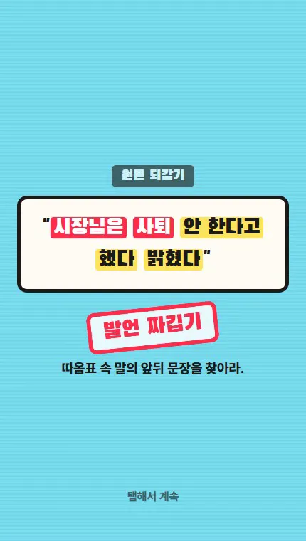
마지막 버전을 시작하기 전에 앞의 여섯 버전이 왜 재미없었는지 문서로 정리하고, 각 원인을 지켜야 할 규칙 하나씩으로 바꿨습니다.
| 실패 원인 | 어디서 | 마지막 버전의 규칙 |
|---|---|---|
| 보상이 늦었다 | v2: 결과가 다음 날 컷씬, 숨긴 게이지로만 옴 | 박자마다 즉시 “딱! / 좋아 / 놓침”과 소리. 성공은 소리로 먼저 안다 |
| 시스템이 많았다 | v2: 슬롯 + 확률 + 게이지 3개 + 채팅 3스레드 | 스테이지마다 동작은 하나(탭, 밀기, 문지르기, 돌리기 중 하나) |
| 읽기 위주였다 | v3 · v4 · v6: 자료와 독백을 읽는 시간이 김 | 글은 한 줄. 시작 설명 1줄, 결과 1줄, 기법 이름 1단어 |
| 메시지를 설명하려 했다 | v2 · v4: 독백과 컷씬으로 말함 | 끝마다 원본 되감기를 그림으로. 알아채는 법만 한 줄 |
| 동사보다 서사를 먼저 키웠다 | v2 → v4: 세계관부터 다시 짬 | 설명 대신 연습 3박자. 한 번이라도 맞히면 실전 |
버전이 바뀐 지점마다 받은 반응과 그때 내린 결정입니다. 따옴표 안은 기획 문서와 작업 기록에 남은 말 그대로입니다.
→ 판별 게임(v1)을 버리고 기자 시점(v2)으로
→ 화면을 책상 하나로 고정하고, 하루 단위로 결과를 바로 보여 주는 경량화(v3)
→ 불확실성을 “자료를 읽어 진위를 가리는 것”으로 옮김
→ 드래그로 잇는 잔손질이 많고 아무 쌍이나 이어 보게 돼서 롤백
→ 기사 쓰기를 버리고 증언대 추리물(v4)로. 같은 날 한 동작 분류 게임(v5)도 시험
→ 공모전용으로 새로 만든 〈절반의 사실〉(v6)을 몇 시간 만에 폐기
→ 〈조작 편집실〉(v7) 스테이지 8개를 같은 날 구현
리듬 게임은 판정이 몇십 ms만 밀려도 불공평하게 느껴집니다. 화면 그리기와 박자 계산을 분리하고, 모든 시간을 오디오 시계 하나에 맞췄습니다.
// engine.js — 탭이 들어오면
const t = AU.now() - AU.latency(); // 귀에 들린 시각으로
let best = null, bd = 1e9;
for (const tg of targets) {
if (tg.done) continue;
const d = Math.abs(t - tg.t);
if (d < bd) { bd = d; best = tg; }
}
if (best && bd <= 0.15)
hit(bd <= 0.075 ? 'perfect' : 'good');스테이지 8개가 모두 같은 형식으로 엔진에 등록됩니다. 엔진은 박자 · 판정 · 화면 흐름만 맡고, 무엇을 자르고 미는지는 스테이지가 정합니다. 그래서 스테이지마다 완전히 다른 로직을 넣을 수 있었습니다.
GAME.register({
no, name, technique, input, bpm,
setup(el, api), // 화면 만들기
music(i, t, api), // 16분음표 i번째 악기
async run(api), // 목표(박) 예약 → 결과
reveal(el, data), // 원본 되감기 그림
});6번 〈느리게〉는 다이얼을 돌리면 음악 자체가 느려집니다. 정해진 박 시각이 없어서 이 스테이지만 자체 시계로 8분음표를 실시간 재생하고, 목표 메트로놈과의 속도 배율 차이(0.025 이내 딱, 0.06 이내 좋아)로 판정합니다. 목표에 가까워지면 위상을 메트로놈 쪽으로 조금씩 당겨 박이 맞아떨어지게 했습니다.
5번 〈그래프 늘리기〉는 손을 떼는 순간이 판정 시각입니다. 축을 정해진 범위까지 올렸는지와 넷째 박에 놓았는지를 함께 봅니다. 범위 밖이면 박이 맞아도 “범위!”, 범위 안인데 늦으면 “박자!”가 뜹니다.
자동 플레이로 녹화한 실전 장면입니다. 아래 줄은 각 스테이지가 끝나고 나오는 원본 되감기입니다.
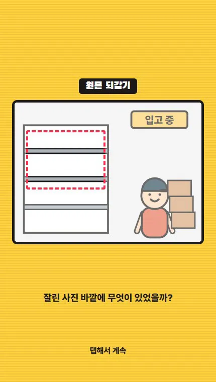
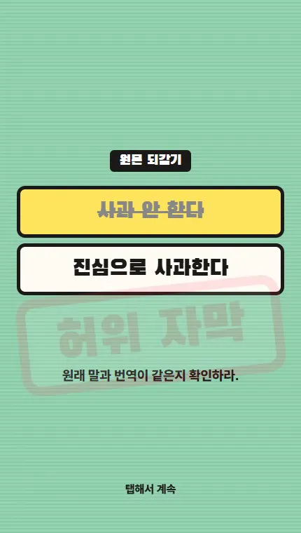
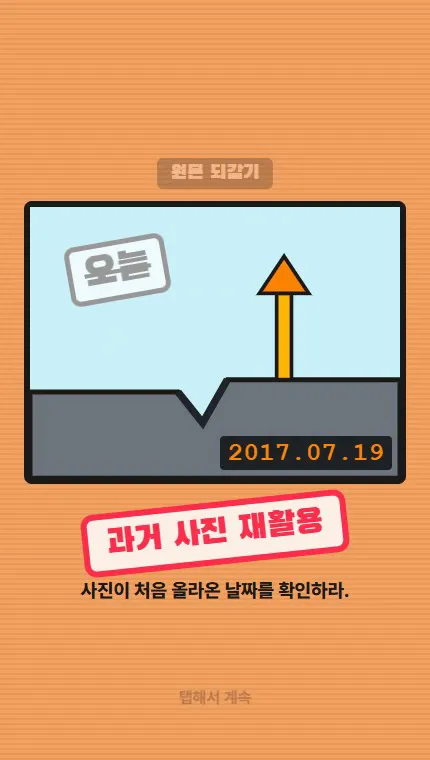
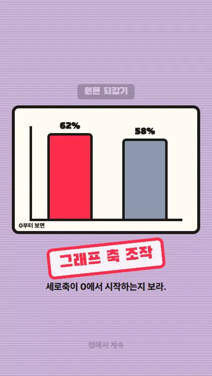
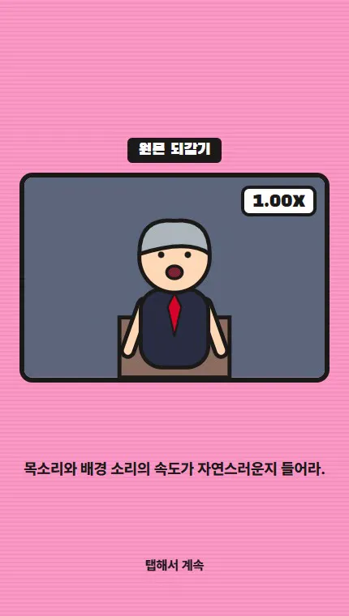
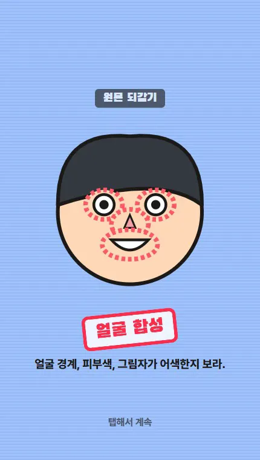
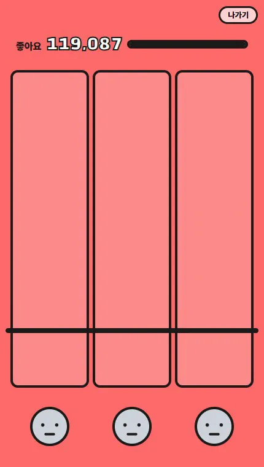
일곱 번을 다시 만들 수 있었던 건 버전 하나를 하루 안에 플레이 가능한 상태로 만들고 바로 판단했기 때문입니다.
앞 버전을 고치지 않고 v3/ v4/ v5/처럼 새 폴더에서 시작하고, 앞 버전은 백업으로 그대로 남겼습니다. 덕분에 지금도 모든 버전을 실행해 비교할 수 있습니다.
주소에 ?s=3을 붙이면 3번 스테이지부터, ?auto=1이면 탭 판정을 자동으로 칩니다. 8개 스테이지 완주와 콘솔 에러 0을 이렇게 확인했고, 드래그 스테이지는 포인터 이벤트를 넣어 확인했습니다.
공모전 버전을 시작할 때 앞 버전들을 “무엇이 실패했고 무엇을 배웠는지” 표로 정리한 인수인계 문서부터 썼습니다. B-02의 규칙이 그 문서에서 나왔습니다.
1인칭 책상 위 컴퓨터 · 전화기 · 가족사진 · 다이어리를 눌러 하루를 보내는 구조입니다. 게이지는 숫자 대신 가족사진이 책에 가려지는 식으로만 드러납니다. GitHub Pages에서 지금도 플레이할 수 있습니다.
타이틀 → 편집실 모니터 8개 → 스테이지 → 원본 되감기 → 강 팀장의 평가(다시 해 / 괜찮네 / 최고). 깬 스테이지는 모니터에 평가가 남습니다.